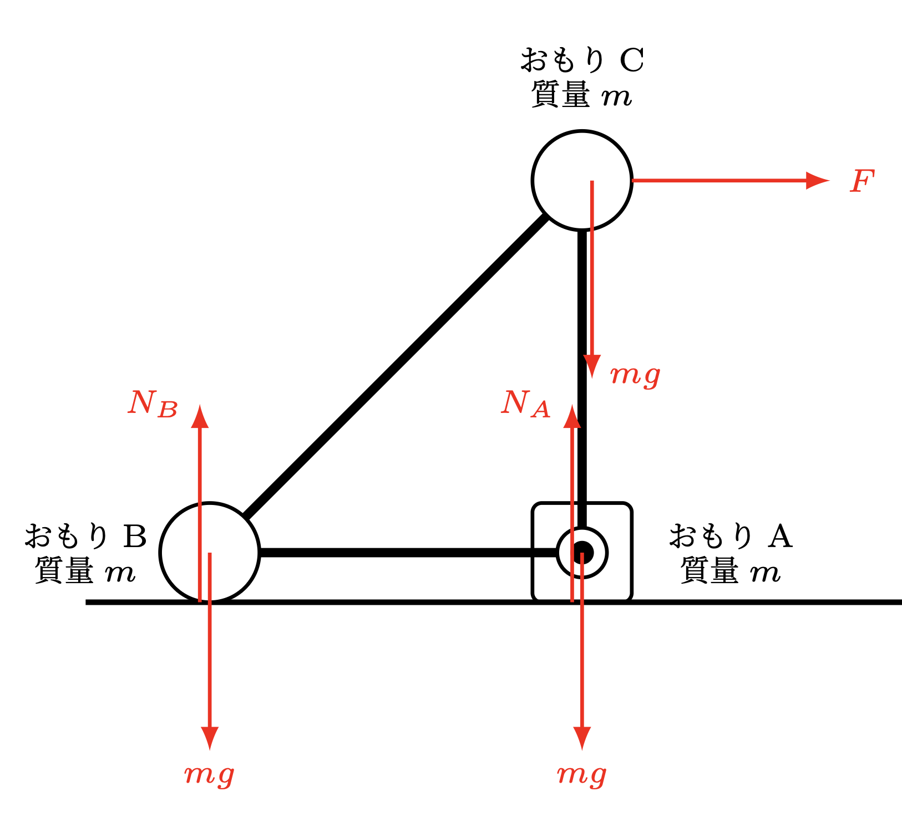

東京大学 2025 第1問
ティンカートイ(※)のようにいくつかのおもりと棒を組み合わせた剛体は 〇〇 年にも出題されています。 〇〇 年 〇回の 東大模試（駿台？河合？）でも出た記憶。
剛体といっても、中身が均一に詰まった円盤や板のような単純な物体の並進・回転運動ですら、積分を使わずに高校範囲でわかるな要は限られてくるので、結局こういうふうにいくつかの点だけに質量が局在するような形の問題が多くなります[要検討]。
- 力学
- 剛体
思考の道すじ
- 何はともあれ、まずは かかる力をすべて図示します（※1）。
-
質点（大きさを持たない）ではなく剛体を考えているので、運動は
- 並進運動(剛体全体の、上下左右前後方向への運動) と
- 回転運動
- 高校では剛体の回転の運動方程式は扱いませんから、結局「回転していないとき」あるいは「静止摩擦力が限界を超え、回りだしてしまう瞬間」の状況さえわかれば良いのです。
- 私たちは剛体が並進運動していないときのモーメントの釣り合いしか知らないのに、IIIでは物体自体が並進運動しています。仕方がないので、物体に固定した座標系で考えることで、モーメントを議論することができます。
- III(2)では物体が床に対して加速度を持っています。このような系で無理やり我々の知っているニュートン力学をするために、慣性力という道具があるのでした。
解説
I-(1)力の図示
まずは、かかる力を全て図示しましょう。
「あれ？」と思った人への補足
- 右向きの力 $F$ が おもりC に直接かかっているように描いていますが、実際には力は糸の先端にかかり、その反作用で〜〜〜
- 同様に、おもりCとAをつなぐ棒の両端にも色々と力がかかっていますが、結局全体で見たら打ち消すので本質的ではありません。
[参考] 全ての力を書き出すのは意外に難しい話
すでにわかっている・与えられている力は、3つの小球にかかる重力（それぞれ $mg$ ）と、糸を引っ張る力 $F$ です。
一方、未知の力はおもりA,Bが床から受ける垂直抗力（$N_A, N_B$ とおく）、おもりAが床に固定されて受ける水平方向の垂直抗力（$R$ とおく）です。「剛体が静止している」などの条件から、これらを求めていきます。
条件の定式化
問題文には $F$ を徐々に大きくしていくと、ある大きさ（$F_0$とします）に達したときにおもりBが床から離れた、とあるので、まずは $F$ が $F_0$ に達するまでの、物体が止まっている（並進も回転もしていない）間の条件を考えます。
$ F < F_0$ の間、垂直抗力 $N_A$ は $F$ の値に応じて都合よく働きますが、これが $0$ になってしまった瞬間、釣り合いが破れ、おもりBは浮いてしまします [？]。
思考の道すじでも触れたように、「物体が静止している」という条件は
- 物体が並進していない
- 物体が回転していない
並進しない条件は、力の釣り合いにより $$ \left\{ \, \begin{aligned} N_A + N_B &= 3mg \\ R &= F. \end{aligned} \right. $$
回転しない条件はモーメント（距離×力）の釣り合いで書けます。どの点の周りのモーメントを考えてもいいのですが、ここでは おもりA を中心に考えると [?]、 $$ dF + dN_B = dmg $$ すなわち $$ N_B = mg - F $$ ここからまた、$N_A$も $$ N_A = 2mg + F $$ とわかります。 [補足] 本当にこれで十分か？
以上の考察により、おもりB が浮くのは Bの垂直抗力 $N_B$ が $0$ になるときですから、 $$ 0 = N_B = mg-F $$ を解いて、 $$ \bm{F = mg} \; (=F_0) \; \cdots \; \text{I-(1)} $$ ◼︎
I-(2)
糸を引いて物体を傾けていった時、倒れてしまうのは、おもりB,Cを結ぶ棒がちょうど床と平行になったときでしょう。これ以上右に傾くと、釣り合いが破れて一気に右に倒れてしまいます。この時までに力がした仕事を求めましょう。
仕事とはそもそも（物体が動いた方向への）力×距離の寄せ集め（=積分）で、移動中の物体への力のかかり方によって決まります。しかし困ったことに今回私たちは、物体が倒れるまでの力 $F$ の変化など知りません。それどころか、力 $F$ のかけ方は何通りでも存在してしまいます。
仕事の定義に従って直接は求められない。では、どうするか。ここで活躍するのが エネルギー保存則 です。
一般に何かの物理的変化をする前と後で変わらない量があるとき、それを 保存量 といい、途中経過を追跡せず変化のはじめと終わりの状態だけ知りたいとき重宝します。
今回であれば、物体が倒れる瞬間までの $F$ の変化は不明ですが、物体が持つ始点と終点での位置エネルギーは計算できます。すなわち、床を位置エネルギーの基準として、最初の位置エネルギーは $mgd$ （おもりCによる）、倒れる瞬間の位置エネルギーは $$ 2\times mg \frac{d}{\sqrt{2}} = \sqrt{2}mgd $$ なので、力 $F$ がした仕事 $W_0$ はこの差 $$ W_0 = \sqrt{2}mgd - mgd = \bm{(\sqrt{2}-1)mgd} $$ として求められます。◼︎
II
置き換えて考えよう
おもりAが床に固定されていなくても、摩擦力により物体が静止している間は、Iの $\bm{R}$ を おもりBが床から受ける摩擦力だと思う ことで全く同様に考えられます。
ただし、これが成立して物体が静止できるのには、条件があります。なんでしょうか？
そう、静止摩擦力 $\bm{R}$ が最大摩擦力を超えないこと、すなわち $$ R \leq \mu N_B $$ であることです。これに注意して解き進めていきます。
II-(1)(2)
(1)(2)は、Iですでに求めています： $$ \begin{aligned} N_B &= mg-F \\ N_A &= 2mg + F \end{aligned} $$
II-(3)
物体が滑り出すのは、静止摩擦力 $\bm{R}$ が最大摩擦力を超え て力の釣り合いが破れる瞬間： $$ \begin{aligned} F &= R = \mu N_B = \mu (mg-F) \\ \end{aligned} $$ です。両辺に $F$ が入っているので、うっかりこのまま右辺を回答してしまわぬよう気をつけましょう。
これを $$ \frac{1}{\mu} F = mg-F \\ F\left(1 + \frac{1}{\mu}\right) = mg $$ と解いて、 $$ \bm{F = \frac{mg}{1+\dfrac{1}{\mu}}} $$ ◼︎
解答上はこれで問題ないのですが、ここで2つのことを気にかけて欲しいのです。それは、
[検証] 条件 $\mu < \dfrac{1}{3}$ の意味 ── Bは本当に浮かないのか？
あああああ
解答一覧
- (1) a
- (2)
- (3)
東京大学 2025 第2問
I-(2)は見慣れないかもしれませんが少し考察すれば見当がつく問題です。IIのグラフを選ぶ問題とIIIはやや難ですが、IIの方は得点しておきたいところです。全体を通して磁束線の理解が問われている印象でした。ビオ・サヴァールの法則は必須ではありませんが、知っておくとIの(2)で自信をもって解答できるでしょう。また、電磁気の特に電磁誘導が絡むような問題では符号に特段の注意が必要です。
問題と解説
I-(1)
十分に長いソレノイドの中心軸上での磁束密度の大きさは$B=\mu_0nI$で与えられるのでした。ここで $n$ は単位長あたりのソレノイドコイルの巻き数であることに注意して計算すると答は $B_0=\dfrac{\mu_0NI}{l}$ となります。
I-(2)
ソレノイドを半分にしたときの磁束密度に関する問題です。定量的にはビオ・サヴァールの法則で積分計算を実行すると計算できるのですが、時間と手間が非常にかかるので定性的に考えることにします。直感的には右半分からの寄与と左半分からの寄与が等しいように感じます。実際これは正しく、寄与が半分になっているので$B_1=\dfrac{B_0}{2}$が答えとなるのですがもう少し厳密に検討してみましょう。下図は切断前のソレノイドコイルの断面図です。青い矢印で示されれている$\bm{B}_P$は点Pにおける電流素片が原点に作る磁束密度ベクトルです。一方赤い矢印で示されれている$\bm{B}_Q$は点Qにおける電流素片が原点に作る磁束密度ベクトルです。

こうしてみるとわかるように、原点に対して点対称な位置を流れる電流が作る磁束密度ベクトルは等しくなります。よってソレノイドコイルを切断すると磁束密度の大きさも半分になるというわけです。なお、磁束密度ベクトルの向きはビオ・サヴァールの法則より電流の流れる向きのベクトルから原点までの位置ベクトルに向かって右ねじを回す向きになります。
ビオ・サヴァールの法則について
ビオ・サヴァールの法則は以下のように表されます。$$\mathrm{d}\bm{B} = \frac{\mu_0}{4\pi}\frac{I\mathrm{d}\bm{s}\times\bm{r}}{r^3}$$ただしここで$\mathrm{d}\bm{s}$は電流が流れる向きの微小線素ベクトル、そして$\times$は外積を表します。両辺を適切な領域で積分することにより$\bm{B}$を求めることができます。通常これを愚直に積分することはせず、対称性を考慮してベクトル量をスカラー量に変換して積分します。
入試物理においてビオ・サヴァールの法則が直接役に立つことはほとんどありません。ただし、磁束密度ベクトルの向きだけは理解しておくといいでしょう。
II-(1)
ファラデーの電磁誘導の法則より誘導起電力$V$は磁束${\Phi}$を用いて$-\dfrac{\mathrm{d}\Phi}{\mathrm{d}t}$と求められるのでした。多くの高校物理の教科書においては誘電起電力の"大きさ"を$\left|\dfrac{\mathrm{d}\Phi}{\mathrm{d}t}\right|$と記載していますが、符号を含めて理解しておきましょう。本問では流れる電流の大きさを問われているので$I_B=\dfrac{1}{R}\left|\dfrac{\Delta\Phi}{\Delta t}\right|$となります。また、レンツの法則から電流の流れる向きは左から見て時計回りになります。
レンツの法則と電磁誘導の式の関係
ファラデーの電磁誘導の法則には負号がついており、これはレンツの法則の顕れであるといわれています。高校物理においては、誘導起電力に絶対値をつけて大きさのみを情報として取り出し、その向きについてはレンツの法則を用いて判断することになっています。しかし、ファラデーの電磁誘導の式はもともと電流の流れる向きに関する情報も持っているのですから、レンツの法則に頼ることなく数式の上で電流の向きを決定できるはずです。しかしこれはマクスウェル方程式やベクトル解析を必要とするため高校で扱うことはありません。
II-(2)
グラフ選択の問題です。力$F$がどのような変化をしているかを考えるのですが、これは右向きを正とすると述べられています。つまりメタ的に考えると$F$は常に$x$軸に平行なベクトルであるということです。まずはこのことを確認しておきましょう。下図は磁力線と円形コイルの模式図です。ただしソレノイドコイルは簡易的にその断面図を示してあります。

磁力線の接ベクトルはその点における磁束密度ベクトルを表します。円形コイルが図中の位置にあるとき、流れている電流の向きは前問で考察したようには左側から見て時計回りです。ゆえに、円形コイルの上端と下端が受ける力はそれぞれ図の通りになります。これは、磁束密度の定義(フレミングの左手の法則)を用いて判断しても、ローレンツ力を用いて考えてもどちらでも構いません。ここで図中に示されたふたつの力のベクトルを見てみると、$x$軸に垂直な成分は打ち消し合うことがわかります。これは結局、円形コイル全体に働く力としては$x$軸に平行な成分しか残らないことを意味します。またその向きは図より左向き、つまり$F\leq0$となります。この時点でグラフは(く)(こ)(し)の三択になるのですが、磁力線が滑らかにつながっていることから円形コイルに働く力も滑らかに変化するはずだと考えて微分可能なグラフを解として選択します。つまり答えは(く)になります。直感的な解答とはなりますが、微分可能性に注目することは非常に重要です。では逆に、力が(く)のグラフのように変化することを確認してみましょう。以下の図は円形コイルが受ける力を位置によって表したものです。

先ほど確認したように、円形コイルに働く力$F$には$x$軸に平行な成分のみ寄与するのでした。従って明らかに円形コイルが原点にあるときの方が、そうでないときよりも力が大きくなることが見てとれます。$x\to\pm\infty$の極限についても考察しておきます。円形コイルがソレノイドコイルの外で十分遠方にあるときは、もはや磁場の影響を何も受けないので$F=0$となります。また、円形コイルがソレノイドコイルの内部で十分遠方にあるときは磁場が一定となるので$F$の$x$軸に平行な成分が無くなり$F=0$となります。これにより確かに(く)のグラフが正しいことが確認できました。
II-(3)
抵抗値を変えた時に力の大きさがどのように変化するかという問題です。まずは力$F$の表式を考えましょう。前問で触れたように力は２通りの方法で考えることができます。直線電流における磁束密度の定義式：$\bm{F} = \bm{I}\times\bm{B}l$を用いる方法と、ローレンツ力：$\bm{F} = q\bm{v}\times\bm{B}$を用いる方法です。
磁束密度の定義式について
磁束密度の定義式は一般には以下のようになります。$$\mathrm{d}\bm{F} = I\mathrm{d}\bm{s}\times\bm{B}$$ここで$\mathrm{d}\bm{s}$ベクトルはある位置において電流の流れる向きを向いた微小線素ベクトルです。両辺を適切な領域で積分することによって$\bm{F}$を得ます。もし電流が直線電流であるならば$\bm{F} = \bm{I}\times\bm{B}l$となります。
本問においてどちらの考えを採用しても解くことはできますが、ローレンツ力を考えた場合には円形コイルが並進運動している分を考慮する必要があります。そのため定義式を採用した方が楽になるでしょう。円は微小な線分でできていると考えられますので、単に$R$と$F$の関係性を考察する限りでは直線電流の定義式を用いる正当性があります。これらを踏まえて式を見てみると$F$と$I$は比例関係にあることがわかります。さらに$I$は$R$に反比例しますから、$R$が2倍になると$I,F$は$\frac{1}{2}$倍になることがわかります。よって答えは$\frac{1}{2}$倍となります。
II-(4)
ソレノイドコイルに流れる電流の向きが逆になっています。注意深く問題文を読みましょう。ソレノイドコイルに流れる電流の向きが逆になると発生する磁場の向きが逆になり、結果として円形コイルに流れる電流の向きも逆になります。つまり本問では円形コイルを電流は左側から見て半時計回り、端子Yから端子Xの方向へと流れることになります。力$F$の向きは$\bm{F} = -\bm{I}\times\left(-\bm{B}\right)l = \bm{I}\times\bm{B}l$となるので変化しないことがわかります。従って求めるべきは抵抗をひとつだけ繋いだ回路と等価な回路です。並列回路を構成しているもの、途中でコンデンサ(キャパシタ)が挟まっているものは除外します。ダイオードの向きに気を付けると、答えは1,4,7となります。
III
グラフを考える前にこれまでの設問を通じてわかっていることを整理しておきましょう。
- 十分遠方では$F=0$となる
- $x< 0$では$F< 0$
従って私たちが今興味があるのは$x> 0$での$F$の正負です。円形コイルを貫く磁束はこのとき減少していきますから電流は逆向きに流れるはずです。磁束密度ベクトルの向きに気を付ければ$F$の$x$軸に平行な成分は左向きであることがわかるでしょう。以上の情報を総合すると、あたかもグラフはII-(2)で選択した(く)と同じになりそうな気がします。しかし、実はそうではありません。円形コイルが$x< 0$から$x> 0$へと移動する過程で電流の流れる向きが逆になると述べました。これは$I=0$となる瞬間があることを意味しており、それはまさしく$x=0$に円形コイルがあるときです。電流$I=0$であるとき、力$F$もまた$0$になります。このことに注意してグラフを画くと以下のようになります。

解答一覧
- (1) a
- (2)
- (3)